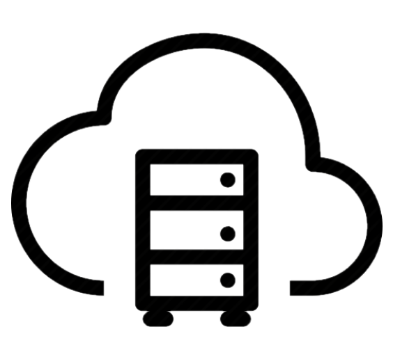
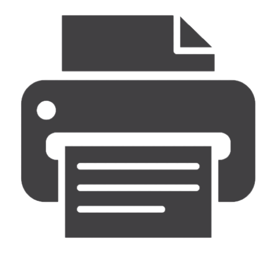
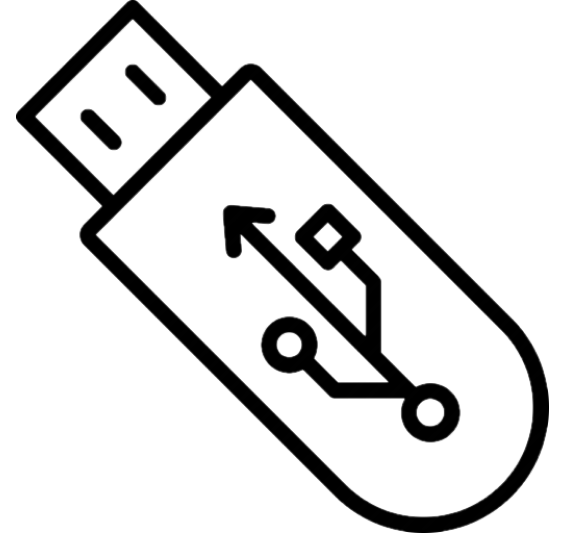

Internal/External Storage
|
Quick access to data without requiring a strong internet connection
Low cost storage units that can be purchased in large quantities to store additional data
Installation is easy and can be managed without external assistance
|
Security issues that data is easy to be steal by theft especailly when it is sensitive data which may lead to serious consequences
Easy to get damaged as it remains in the same location. It may be destroyed by physical accidents or disasters, and then the data would not be able to be restored after the disaster
|
Cloud Storage
 |
It offers unlimited storage capacity either for a flat or usage-based fee
Typically, there are multiple copies of data, stored on multiple servers at different locations. Therefore, if one server stops working or one location suffers damage, data can be restored from another location
It doesn't depend on which device you are using, the data stores on the "cloud". You can access it in anywhere
Data is encrypted by the backup server program before it is stored at a remote server, and is protected from physical causes of data loss
|
Speed for users' retrieval capacity depends upon the speed and efficiency of users' Internet connection. If the user doesn't have Internet access, internet, retrieving the backup data is impossible
Typically, cloud storage companies only offer a small amount of storage space for free
Users must rely on the external company for the security of their data and cannot take control of it themselves
Companies aren't obliged to keep these services around forever
|
Printer Storage
 |
A backup that won’t be affected by hardware outages or tech issues
Nearly impossible for hackers to access the data
|
Impossible for certain file types and impractical for data that will be used by software programs and as a result, must be stored digitally.
User have to manage it certain amount of time to delete or replace the data in the printer's memory. Especially for sensitive data because it is usually unnoticed which is awkward
Less practical for longer documents
Not great for the small room or crowded place because it occupies space, requires the device and carrying around heavy machinery
|
USB Storage
 |
Extremely portable and can be used to retrieve data from almost any large devices.
It offers the cheapest price for storing data among all the type of data backups.
It can easily be used to transfer data to other sources.
|
The portability means that they are small devices and easy to lose or have stolen
USB drives do not last forever; there are a limited number of read and write cycles
The cheap storage medium doesn't offer very large backup space for large files
|